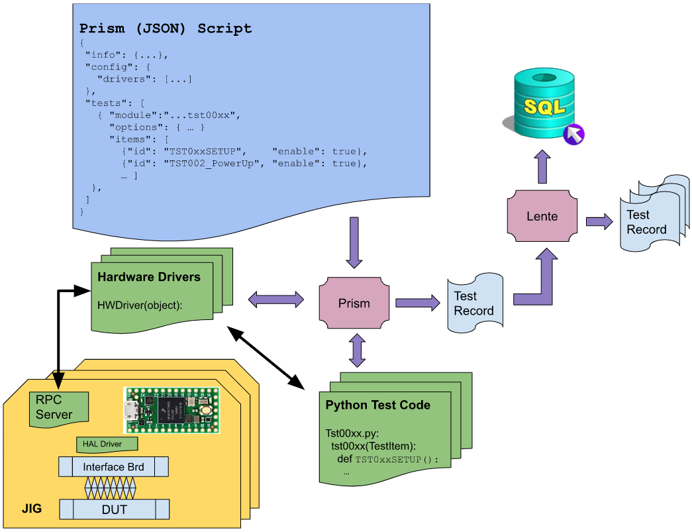

Software Architecture¶
Referring to the above diagram:
Script¶
The script is a JSON(like) text file that defines the tests and information for a particular Device Under Test (DUT).
The script file is essentially human readable, with the intention that some changes to the test sequence can be made without changing the underlying programming (which is usually a more involved process). For example, if there is a maximum limit for a particular test that is unknown, or subject to change, that limit can be defined in the script and changed at will; no Python code needs to change.
Hardware Drivers¶
HW Drivers are a Python class that is created/copied from a template with the following purposes,
Discovers the hardware connected to the Prism PC
There may be one or more of the hardware devices connected
Often USB physical cabling is used to discover multiple hardware types
The Interface board is a “hardware driver” object (class)
There may be one hardware that is shared among multiple Interface Boards.
Creates an object instantiation of the hardware which is passed along to the Python test script.
The Hardware driver(s) associated with a particular test setup are listed in the Script (above).
The Hardware driver code is run only once, on Script validation.
The Hardware Driver provides an API class and communication pathway for Python Test Code to request stimulus or measurements. For example, Teensy4 devices will appear as serial ports to the Prism PC. The Hardware Driver will create a Teensy4 class object that will include a serial port interface, as well as an abstracted API for all the functions that the Teensy4 supports, like reading an ADC to measure a voltage.
The Hardware Driver is meant to make the actual Python Test code as straightforward as possible.
Python Test Code¶
Python Test code performs the tests on the DUT. Here is where you will find the actual code that sets up the DUT stimulus and performs the measurements on the DUT to determine Pass/Fail results.
The Python Test code is a class. For every test Jig connected to the Prism PC, there will be an instantiation of the Python Test code, and each jig can run in parallel to all the others.
The methods in the Python test code map to tests that are defined in the Script (above). Each method will have access to the arguments from the Script (if any).
The Python Test code class gets a handle to the Hardware Driver(s) that were “discovered”. The handles are mapped per slot, thus the same code can handle multiple attached test jigs.
Python Test code, via the Hardware Driver’s API, set up the stimulus and/or make measurement(s) per the test (item) as defined in the Script (above). For every measurement taken, Prism will create a Test Record.
The measurement will typically determine if the Test will Pass or Fail.
JIG - RPC Server¶
Consider the example of Teensy4, there is a JSON RPC Server running on the Teensy. The Hardware Driver will discover and create a Class for the Teensy. The Example code provided in the scripts git repo includes the discovery and class API code.
The example discovery class code should not have to change for most applications.
Consider the Teensy4’s module LED control code in the example. Reviewing the code that implements that API explains the architecture. Note there is a Teensy4 command line interface (CLI) Python program that is intended to test the Teensy’s Class APIs.
JIG - HAL Driver¶
For a particular implementation of an Interface Board for a DUT, specific hardware stimulus and/or measurement functions will be designed.
Teensy would interface to those functions via one of its (local) communications ports, for example, I2C or SPI.
Controlling and accessing those functions via the Teensy’s local communications ports would become an extended API from the basic functions included in the example code.